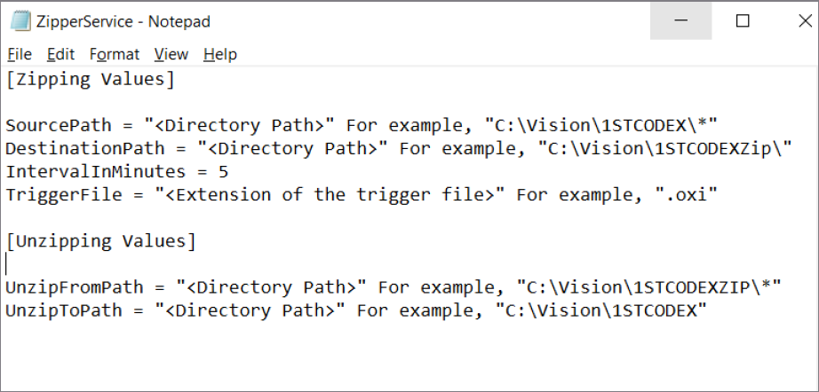

About the service parameters
This topic provides information about the parameters that are required by the Zipper service to perform its operation.
Parameters are certain values that the service requires to perform its operation. The file in which you configure the parameters is known as configuration file. This file must end with .ini extension to make it readable by the service. You can use any text editor, such as Notepad or Notepad++, to create the configuration file.
You must be a system administrator to configure the parameters. Make sure that the configuration file is in the same directory where the Zipper service is installed.
The following screen capture displays an example of the parameters in the configuration file. The Zipping Values section lists the parameters that the service uses to zip files, and the Unzipping Values section lists the parameters that the service uses to unzip files.
The parameters are explained in the below table.
| Parameter | Description |
|---|---|
| Source Path | Defines the source directory to pick files for zipping. |
| Destination Path | Defines the destination directory to save the zipped file. |
| Interval in minutes | Defines the gap between two consecutive executions of the service. For example, in the configuration given above, the gap between two consecutive executions is 5 minutes. |
| Trigger File | Defines the files extension that the service should recognize in the source directory to begin the zipping operation. In the absence of this file, the service can not start zipping. Note that the source folder should have only one file with the extension that is defined in the TriggerFile parameter. For example, in the above parameters, the trigger file is a file with the .oxi extension. |
| Unzip from Path | Defines the source directory to pick a zip file for extraction. |
| Unzip to Path | Defines the destination directory to keep the extracted files. The service creates folder in the given directory with the same name as the zip file being unzipped. |